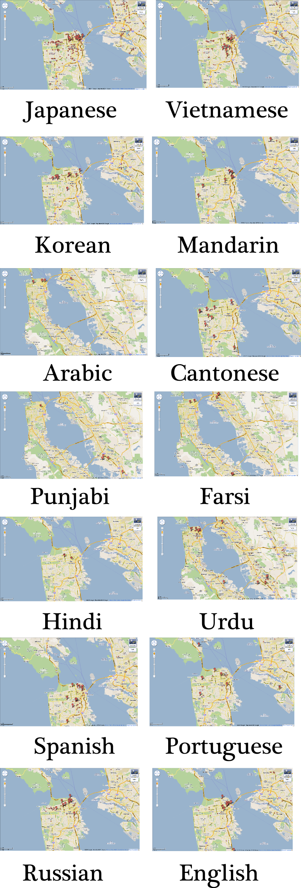

I had an interesting discussion yesterday with Joseph Kautz, head of Stanford’s Digital Language Lab and Academic Technology Specialist, about creating mobile apps for mapping languages. It made me wonder about how language appears in the commercialized and relatively utilitarian maps that make up our most common cartographic experiences.
A simple search for language names in Google Maps proved the inadequacy of this particular spatial service for studying geospatial patterns of languages while simultaneously giving some insight into the predominance or absence of certain language names in business and advertising. Languages synonymous with cultures that have a strong culinary tradition are highly represented, but there’s surprising variation in results for Hindi as opposed to Urdu and a few other interesting spatial patterns that may deserve attention.

Google Maps is not ArcMap or PostGIS or even Google Earth, but it can still provide interesting avenues for humanist inquiry into spatial phenomena.